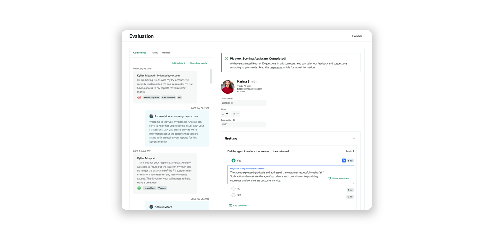
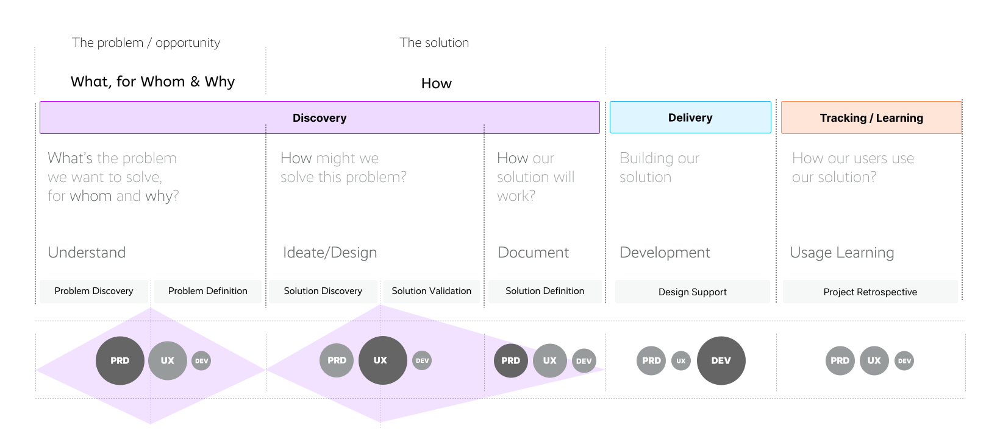
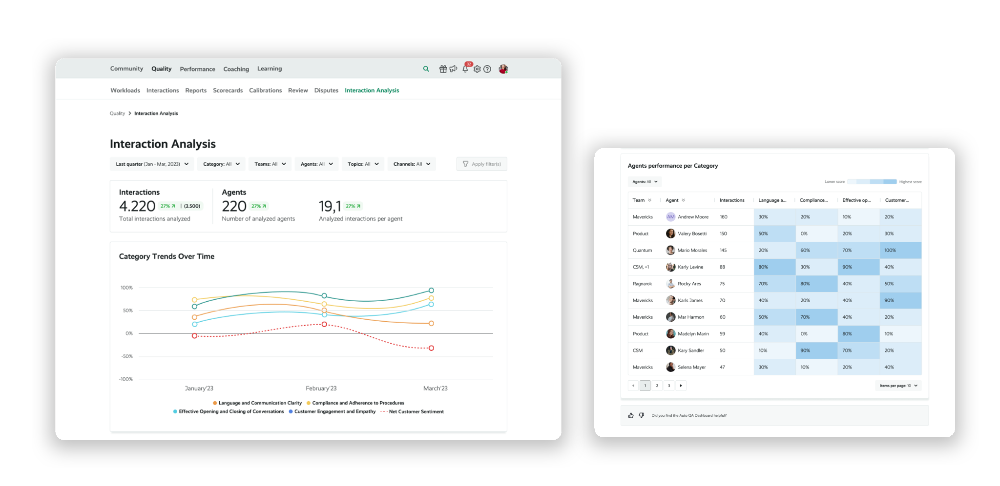

Auto QA.
Designing AI-powered quality assurance
at scale.
Auto QA analyzes 100% of a contact center’s digital interactions and automatically scores them using AI, helping quality teams reduce manual evaluation effort and focus on higher-value quality work.

Quality is one part of a much larger customer service ecosystem.
Playvox supports customer service organizations across areas such as Quality, Coaching, Learning, Performance, Workforce Management, Motivation, and Voice of the Customer.
Auto QA sits within Playvox’s Quality Management experience and focuses specifically on helping quality teams evaluate customer interactions more efficiently and consistently.
Automating repetitive QA work without removing human control.
Auto QA analyzes 100% of a contact center’s digital interactions and automatically scores them using AI, based on new or existing Playvox QM scorecards.
The goal was to automate parts of the evaluation process and reduce the time and effort quality analysts spend performing manual QA evaluations.
Subjectivity
Quality teams wanted to reduce subjectivity in evaluations and uncertainty around whether analysts were consistently calibrated.
Complexity
Analysts often needed to access multiple systems to review evaluation matrices and classify questions, making the process unnecessarily complex.
Client diversity
Customers operated at different levels of maturity, so the product needed to support both highly structured QA programs and organizations still defining their evaluation approach.
Leading the design process from discovery to handoff.
I led the project across the full design lifecycle, partnering closely with Product and Engineering throughout discovery, solution definition, development, and learning.
Discovery, delivery, and continuous learning.
The project followed a collaborative product discovery approach. Design, Product, and Engineering stayed involved throughout the process rather than working through a linear handoff.

Understanding how real QA teams operate.
The discovery process included customer research, focus groups, experience mapping, collaborative workshops, and usability testing.
Testing across different customers was especially important because QA organizations varied significantly in process maturity, terminology, and expectations around AI-powered evaluation.
Consistency matters as much as automation.
Customers wanted AI to help reduce subjectivity and make evaluations more consistent across analysts.
Existing workflows were already complex.
Automation needed to simplify the evaluation process rather than add another disconnected tool or workflow.
One workflow could not fit every customer.
The experience needed flexibility for organizations with very different levels of QA maturity and operational structure.
Making AI evaluation useful, visible, and actionable.
Automated scoring
Auto QA automatically evaluates digital interactions using existing or newly created QA scorecards.
Scoring Assistant feedback
AI-generated feedback is embedded directly into evaluations so analysts can understand the reasoning associated with automated scoring.
Interaction Analysis
Aggregated dashboards help teams identify category trends, patterns, and broader quality signals across large volumes of customer interactions.
Agent performance visibility
Data tables and category views make it easier to compare performance and identify opportunities across agents and quality criteria.
Human review remains part of the workflow
Analysts can still inspect individual interactions, evaluation details, and AI feedback instead of relying on an opaque automated score.



Validation continued well beyond the first prototype.
Designs were iterated through workshops and usability testing with customers representing different QA processes and levels of operational maturity.
Those sessions helped identify where the product needed greater flexibility, clearer guidance, and stronger alignment with existing evaluation workflows.
Learning continued through an Early Access Program, allowing the team to refine scorecards, workload assumptions, and product behavior with real customer feedback.
Scaling quality evaluation beyond manual sampling.
Auto QA introduced a new way for quality organizations to analyze far more customer interactions while keeping analysts involved in the parts of the process that require context and judgment.
Digital interactions analyzed
Auto QA is designed to automatically analyze the full volume of digital interactions instead of relying only on manual sampling.
Manual evaluation effort
Automation reduces repetitive work during traditional QA evaluation workflows.
Scalable quality visibility
Teams can identify broader patterns across interactions, categories, agents, and quality criteria.